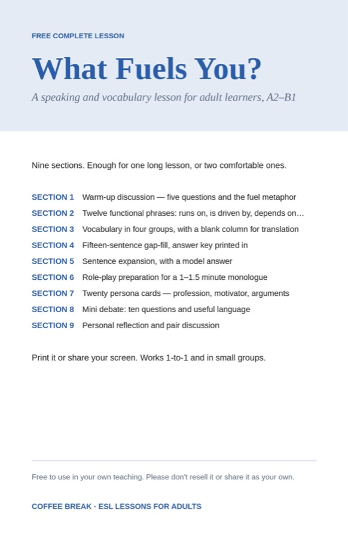

Free lesson
What Fuels You?
A speaking and vocabulary lesson for adult learners, in nine sections, with teacher pages and a student handout.
- Level
- A2-B1
- Skills
- Speaking and vocabulary
- Time
- One long lesson, or two comfortable ones
- Format
- Files
- Complete lesson with teacher pages and handout
Free to use in your own teaching. Please don't resell it or share it as your own. Some audio and pictures in these materials are AI-generated.